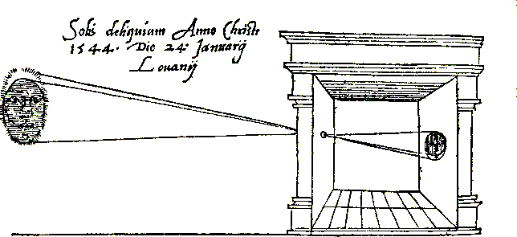
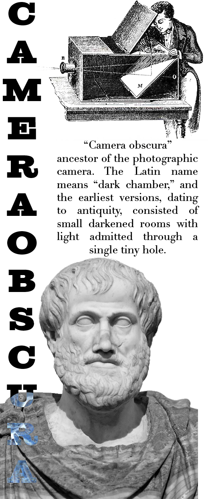
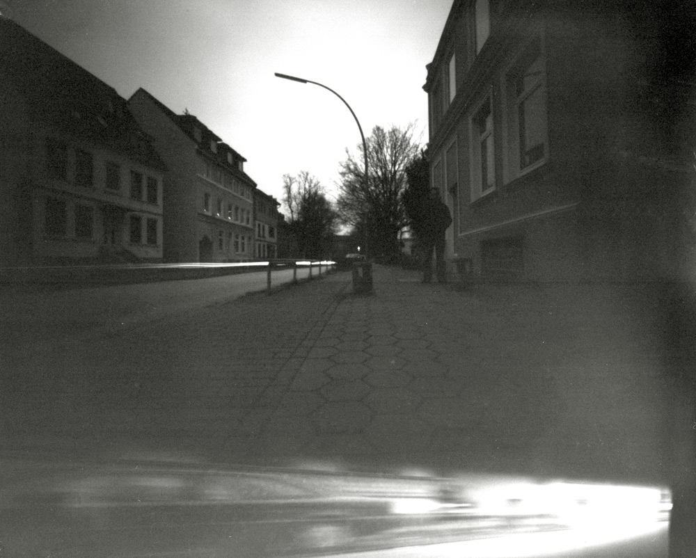

PINHOLE
CAMERA
The pinhole camera, with its deep historical roots, represents a fundamental step
in the development of
photographic technology and the study of optics. Originating in ancient times, its principle was first
documented by scholars such as Mozi and Aristotle, who observed how light travels through small openings to
project images.
Its historical significance extends beyond art, as it was also employed in
scientific observations, notably
in the study of solar eclipses and the sun's movements. The evolution of the
pinhole camera from a simple
observational tool to a sophisticated device for capturing images underscores its enduring impact on both
technology and our understanding of the natural world.



A pinhole camera captures images using the simple optical principle of light traveling in
straight lines. When a single ray of light from an external scene passes through
the small aperture (the pinhole) of the camera, it projects an inverted image of the scene onto the surface opposite the hole,
typically photographic paper or a digital sensor inside the camera.
In educational settings, constructing pinhole cameras serves as a practical, hands-on
method to teach the fundamentals of light and vision, demonstrating the enduring relevance of this ancient
principle. Furthermore, this phenomenon is utilized in scientific and medical instruments showcasing its
versatility and continued importance in both understanding and harnessing the nature of light in
contemporary society.